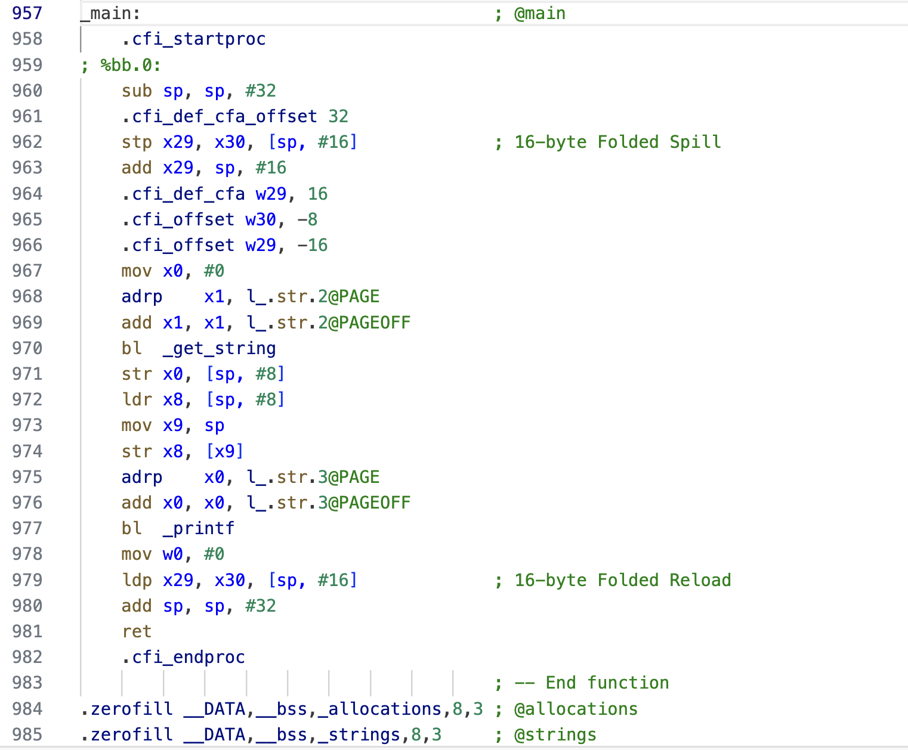
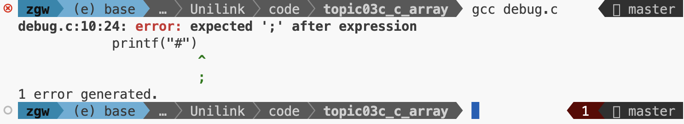
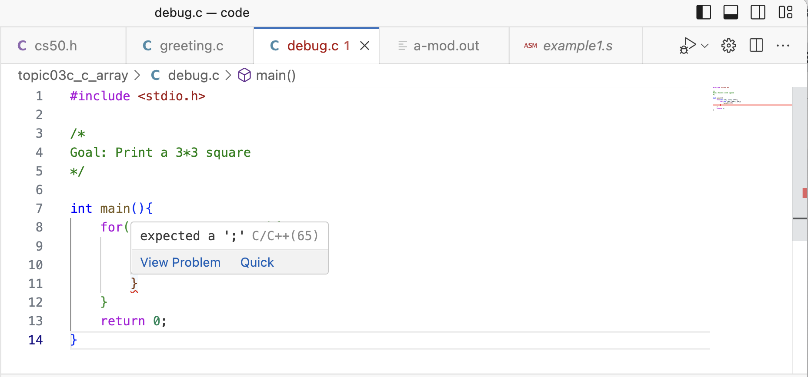

$$ \Huge \textbf{C中的数组} $$
$$ \boxed{ \overbrace{\textit{degaokaolization}}^{\small{去高考化}} \text{ Discussion Group | Topic 03C}} $$
在上面的内容中, 我们知道了如何对于若干个变量做各种各样的操作, 并且运用控制流使得他们做各种不同的事情. 此外, 我们还模块化了一些东西, 让我们可以轻松地调用.
了解了上面的内容之后, 我们就知道了#include "cs50.h"到底做了什么. 打开那份文件, 你会看到许许多多的函数声明, 每一个函数都实现了我们上次展示的功能. 但是你会发现, 有一些新奇的用法: 比如#define这些用#打头的指令, 以及奇怪的*. 不要担心. 我们在下一次就会遇到他们.
我们来看我们最开始的例子:
// Greeting.c
#include <stdio.h>
#include "cs50.h"
int main(){
string name = get_string("What's your name");
printf("Hello, %s", name);
}
其实我们第一次遇到的神秘指令无非就是一些函数调用. 在预处理器处理完这一群东西之后, 源文件就会变成这样:
...(Omitted)
string get_string(string prompt);
int printf(string format, ...);
...(Omitted)
int main(){
string name = get_string("What's your name");
printf("Hello, %s", name);
}
接下来, 编译的过程就会进行, 把它带到更低一层的汇编指令, 就像这样:

不过这个内容我们现在不必担心. 因为这是计算机专业在之后会了解的一个有趣的内容. 大多数时候, 不理解这个也不影响太多 - 毕竟这个更贴切与计算机自己理解东西的视角. 当编译器和高级语言没有被发明出来的时候, 人们就要用这样的方式操作电脑. 想想就非常的难以置信! 但是, 有些代码可能会被编译器经过一些很蠢的优化降低了性能, 那个时候, 可能也要像这样追求程序的效率了.
既然这个都已经摆在大家的面前了, 我们来实际看一下: 其中它也按照我们的要求用bl进行了函数的调用, 并且他们前面的add, ldr这一类的就是对于那些最小的单元们做的.
在我们的程序变复杂之前, 我们最好要了解一下调试: 毕竟, 程序变得复杂之后, 我们就很难用脑力追踪程序运行一条之后, 里面的各个变化了. 所以, 我们自然有调试工具帮助我们!
看下面的一段程序:
#include <stdio.h>
/*
Goal: Print a 3*3 square
*/
int main(){
for(int i=0; i<=3; i++){
for(int j=0; j<=3; j++){
printf("#")
}
}
return 0;
}
首先我们来编译一下, 发现编译器开始报错了 -

如果你配置好了编辑器的话, 把鼠标移到上面就会有这样的提示:

嗯, 这样子你就需要在后面加上一个分号了. 因为这个是我们C里面的规定.
过了编译器, 接下来就是运行时看看是不是符合我们的预期了. 如果在运行的时候, 我们发现没有满足我们的预期, 那么就可以使用调试器. 让它帮助我们理解它是如何进行执行的.
但是, 在上一节介绍的内容说完之后, 我们发现一个小问题: 似乎我们连排序成绩这么简单的事情还做不到! 具体地, 我们希望一次就申请一系列的变量, 用下标区分: \(a_0,a_1,\cdots a_n\) . 并且能方便地索引它. 这就需要引入数组的概念.
事实上, 我们每一次声明的变量,
$$ -\mathscr {E}\text{nd of the note}- $$